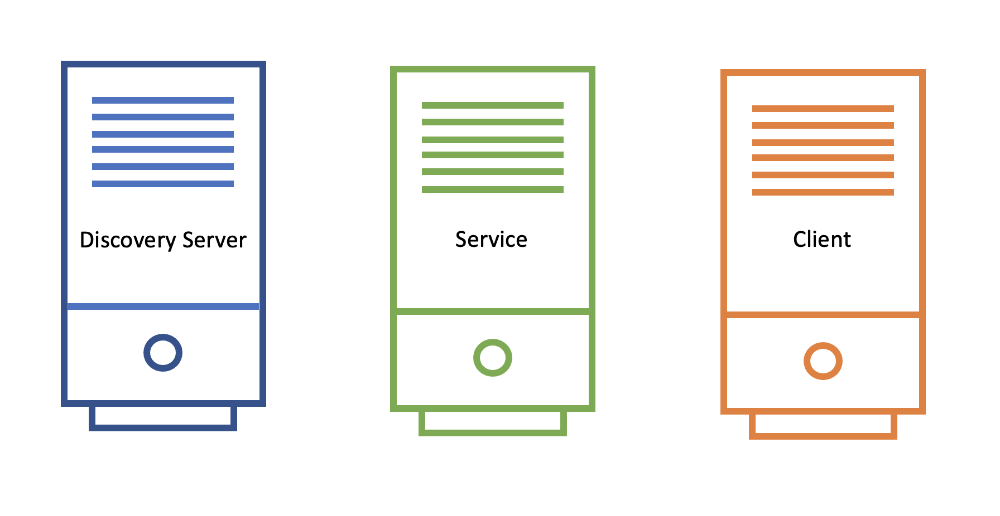
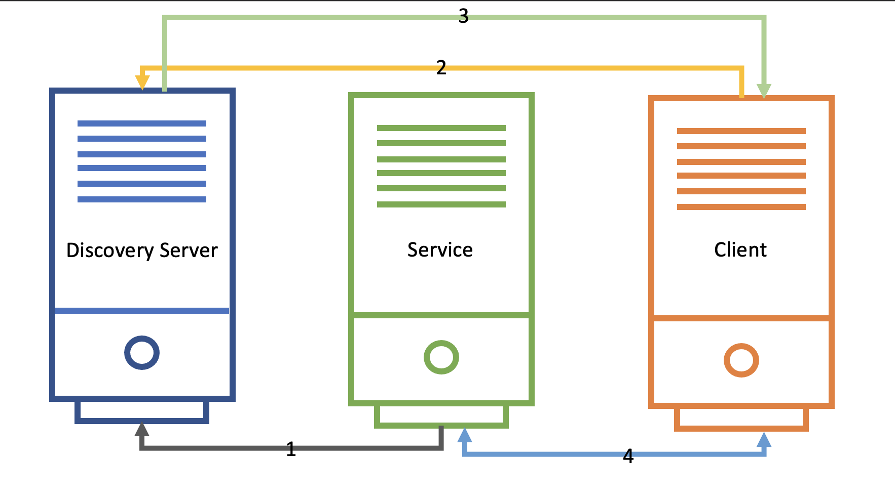
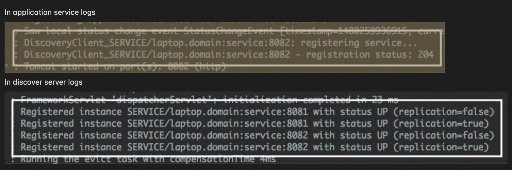

Spring Cloud Fundamentals: Service Discovery
Contents
Spring Cloud Fundamentals: Service Discovery¶
Question: In microservice environment, how does one service know where the other service is located at?
Service discovery provides:
A way for a service to register itself.
A way for a service to de-register itself.
A way for a client to find other services.
A way to check the health of a service and remove unhealthy instances.
Multiple ways to discover services in Spring Cloud:
Spring Cloud Consul
Spring Cloud Zookeeper
Spring Cloud Netflix
Service Discovery Key Components¶

Service Discovery Flow¶

Service Registers
Client looks up service location
Discovery server sends back service location
Client-Service connection is established.
Service Discovery Components: Discovery Server¶
An actively managed registry for service locations.
Source of truth.
One or more instances.
Using Spring Cloud Eureka Server¶
pom.xml
<dependencyManagement>
<dependencies>
<dependency>
<groupId>org.springframework.cloud</groupId>
<artifactId>spring-cloud-dependencies</artifactId>
<version>Camden-SR2</version>
<type>pom</type>
<scope>import</scope>
</dependency>
</dependencies>
</dependencyManagement>
pom.xml
<dependency>
<groupId>org.springframework.cloud</groupId>
<artifactId>spring-cloud-starter-eureka-server</artifactId>
</dependency>
application.properties
spring-application.name=my-discovery-server
application.yml
spring:
application:
name: my-discovery-server
Application.java
@SpringBootApplication
@EnableEurekaServer
public class Application {
public static void main(String[] args) {
SpringApplication.run(Application.class, args);
}
}
Using Spring Cloud Eureka Server:
Just add the
@EnableEurekaServeron the main class. That’s it, the Eureka discover server is ready and we can start the server application.It will try to register itself with the peer-servers (for high availability we tend to run multiple servers).
Which will if there is only one server running.
Configurations:
spring.application.name: a unique name for the applicationeureka.client.register-with-eureka: boolean, means if we want to register self with a peer eureka server.eureka.client.fetch-registry: boolean, if we want to fetch existing registry from a peer discovery server.server.port: default eureka server port is 8761
Service Discovery Components: Application Service¶
User of the Service discovery client.
Using Spring Cloud Eureka Client¶
pom.xml
<dependencyManagement>
<dependencies>
<dependency>
<groupId>org.springframework.cloud</groupId>
<artifactId>spring-cloud-dependencies</artifactId>
<version>Camden-SR2</version>
<type>pom</type>
<scope>import</scope>
</dependency>
</dependencies>
</dependencyManagement>
pom.xml
<dependency>
<groupId>org.springframework.cloud</groupId>
<artifactId>spring-cloud-starter-eureka</artifactId>
</dependency>
application.properties
spring-application.name=my-service
eureka.client.service-url.defaultZone=http://localhost:8761/eureka
application.yml
spring:
application:
name: my-discovery-server
eureka:
client:
service-url:
defaultZone: http://localhost:8761/eureka
Application.java
@SpringBootApplication
@EnableDiscoveryClient
public class Application {
public static void main(String[] args) {
SpringApplication.run(Application.class, args);
}
}
Service discovery logs on both client and server side:

Service Discovery Components: Application Client¶
Calls another application service to implement its functionality.
User of discovery client.
NOTE:
It makes sense for an application to be both a service and a client.
Only difference with service is in the configuration as it has
eureka.client.register-with-eurekato false. A Client doesn’t need anybody to discover it!
Discovering Services as a Client: Two Options¶
1. Eureka Server Specific:
@Inject
EurekaClient client
2. Discovery Server Agnostic:
/* Spring Discovery Client */
@Inject
DiscoveryClient client
Using the EurekaClient¶
InstanceInfo instance =
eurekaClient.getNextServerFromEureka("service-id", false);
getNextServerFromEureka - pick the next instance using round-robin.
1st argument - virtual hostname or service id of service to call.
By default, apps use the
spring.application.nameas their virtual hostname when registering.
2nd argument - whether or not this is secure request.
Using the DiscoveryClient¶
List<ServiceInstance> instances =
client.getInstances("service-id");
String baseUrl = instances.get(0).getUri().toString();
getInstances - return all instances of the given service id
Eureka Additional¶
Eureka Dashboard¶
Enabled by default
eureka.dashboard.enabled=true
Displays useful metadata and service status.
Eureka Configuration¶
eureka.server.*- EurekaServerConfigBeaneureka.client.*- EurekaClientConfigBeaneureka.instance.*- EurekaInstanceConfigBean
Other Features¶
Service Health
Regularly checks the status of the services.
Clients send heartbeats every 30 sec (default).
Services removed after 90 sec of no heartbeats (defaults).
Can customize configuration to use
/healthendpoint.eureka.client.healthCheck.enabled
The registry is distributed (cached locally on every client).
Clients can operate without discovery server.
Fetches deltas to update registry.
AWS aware
AWS-specific instance deltas.
Elastic IP bindings.
Multi-zone aware.
Multi-region aware.